Editar documentos
Una vez que hemos instalado Github Desktop y estamos preparados para redactar los documentos en nuestra máquina local, prescindiendo del editor on-line de GitHub, el siguiente paso será escoger un editor de textos.
Vaya por delante que para crear archivos markdown, html, css, yml, etc, lo que necesitamos es un editor de “texto plano”, de los que usan los programadores. El popular Microsoft Word u otro similar no son buenas soluciones en este caso.
Escogiendo un editor
Al buscar un editor del tipo bloc de notas, descubriremos que en la web hay infinidad de soluciones a nuestra disposición. Entre los usuarios de windows es muy popular Notepad++, que podemos descargar de su página web. En el caso de los equipos Mac, se incluye de serie el entorno de desarrollo XCode, que a mi personalmente me parece demasiado complejo. A veces he utilizado TextMate, aunque también es muy popular TextWrangler.
Una opción multiplataforma cuyo uso está muy extendido es Atom. Por otro lado, Microsoft, en su compromiso con el software libre, proporciona un editor muy potente llamado Visual Studio Code, disponible para Windows, Mac y Linux. Cuenta con herramientas para facilitar el desarrollo de documentos tanto en formato HTML como MarkDown.
Un caso especial son los editores on line, páginas web que presentan un panel de edición de texto en la ventana del navegador. Los orientados a crear archivos markdown suelen dividir la ventana en dos partes, de forma que introduciendo el texto del documento en uno de esos paneles, en el otro panel tendremos una previsualización del aspecto final de la página web resultante. Un editor muy popular dentro de esta categoría es StackEdit. Otro es Dillinger. En esa misma línea he encontrado un editor bastante minimalista aquí.
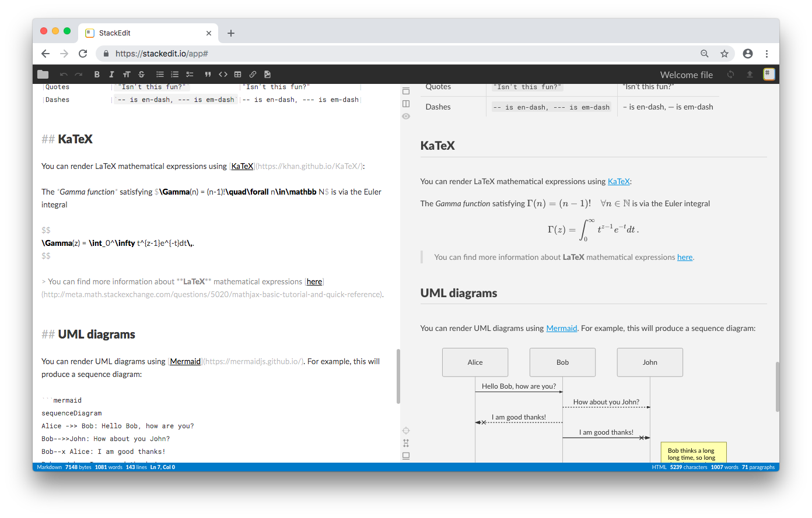
Imagen: StackEdit en acción. A la izquierda el texto introducido en formato markdown; a la derecha el aspecto final cuando se convierta en página web
Últimamente suelo utilizar el editor Visual Studio Code de Microsoft. Es software de libre descarga, potente y disponible para varios sistemas operativos. La descarga e instalación es bastante simple desde su página web.
Una vez iniciado, su aspecto será el siguiente:
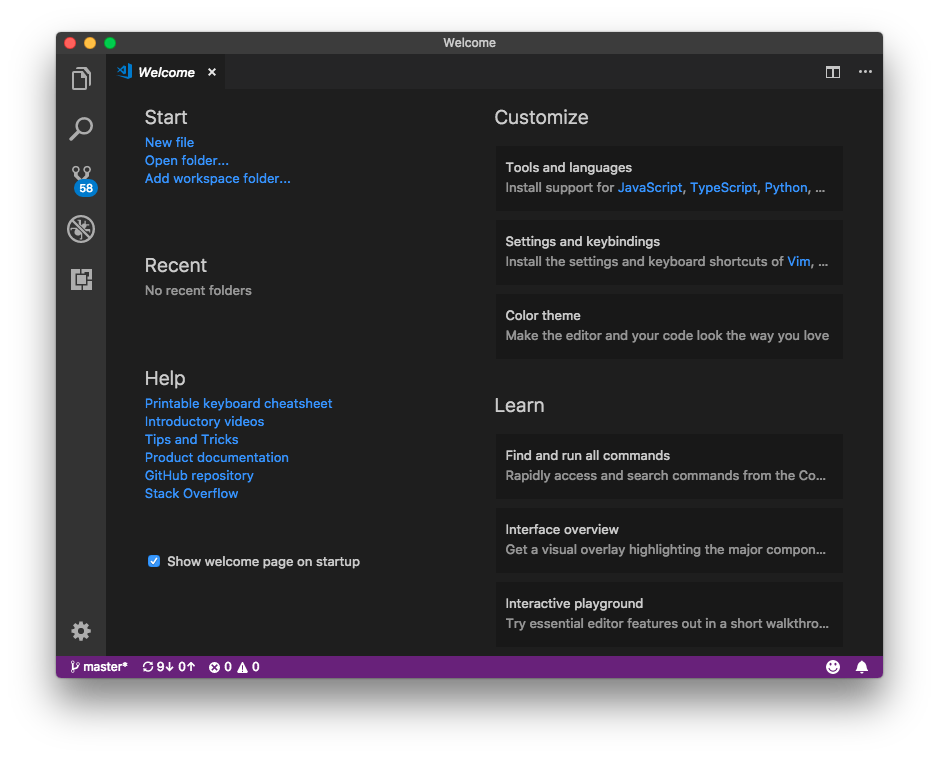
Lo que se muestra es un documento de bienvenida llamado Welcome, que podemos cerrar, y que posteriormente podemos recuperar desde el menú Help. Véase que se pueden tener varios documentos abiertos a la vez, que se identifican mediante una pestaña en la parte superior. Para cerrar cualquiera de ellos, pulsar en el icono (x) que hay en dicha pestaña. También contamos con un panel de navegación de documentos abiertos, pulsando en el menú View > Explorer.
Uso del editor
Podemos cambiar los colores utilizados por el programa mediante el menú Preferences > Color Theme:
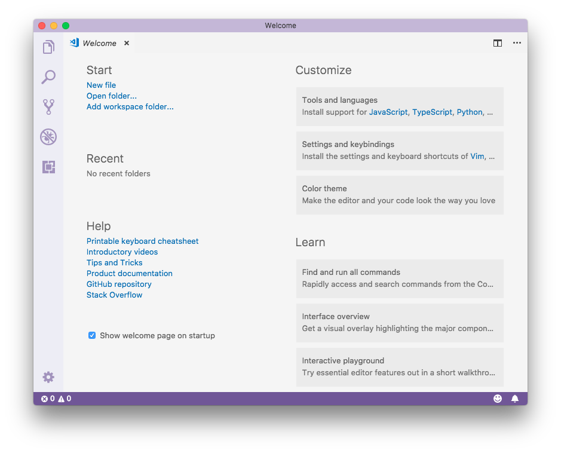
Además de las opciones de menú, contamos con otros mecanismos para interactuar con el editor. Por ejemplo, para abrir un archivo, podemos:
- seleccionar la opción de menú File > Open
- pulsar el atajo de teclado
Ctrl-O(en un Mac suele serCmd-O) - introducir el comando
File: Open...en el panel de comandos.
La command palette es un panel para introducir comandos que se abre al pulsar sobre el menú View > Command Palette (o pulsando la tecla de atajo correspondiente). Muestra una lista de comandos que podemos ejecutar, y si introducimos un texto, por ejemplo, la palabra open, dicha lista se reducirá para mostrar las entradas que contienen esa palabra. Para ejecutar cualquiera de ellas, seleccionarla y pulsar [Intro], o bien haciendo clic con el ratón:
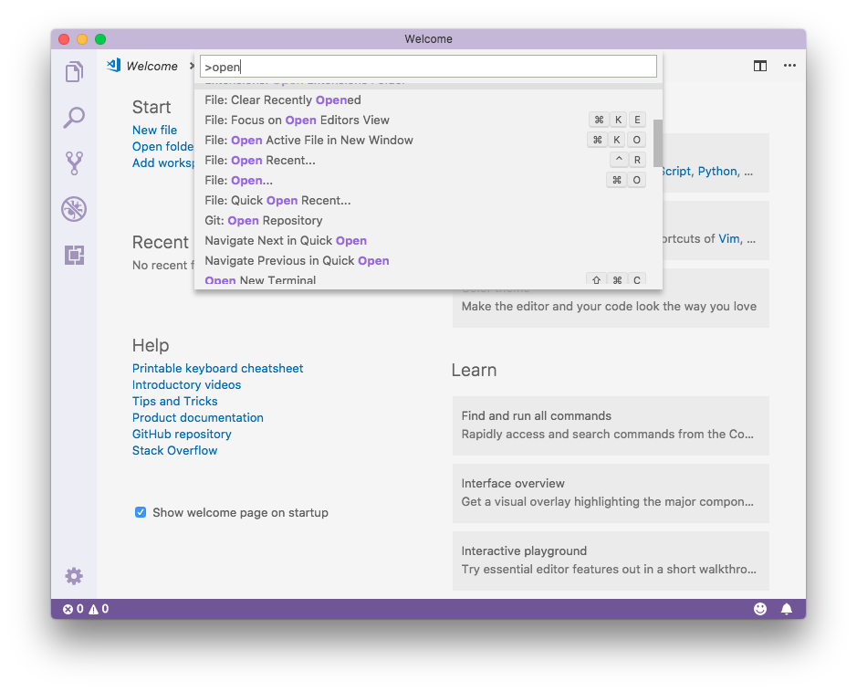
Visual Studio Code cuenta con funcionalidades para facilitar la edición de diferentes tipos de documentos. Por ejemplo, si editamos un archivo [HTML],al introducir el texto contaremos con sugerencias de todo tipo. También se resaltan las etiquetas html en diferentes colores. Nótese que previamente el editor debe identificar el tipo de archivo, que se establece cuando lo guardamos con un nombre y una extensión.
Veamos un ejemplo. Al escribir en formato html, si queremos especificar el color de un elemento, se despliega automáticamente una lista de colores.
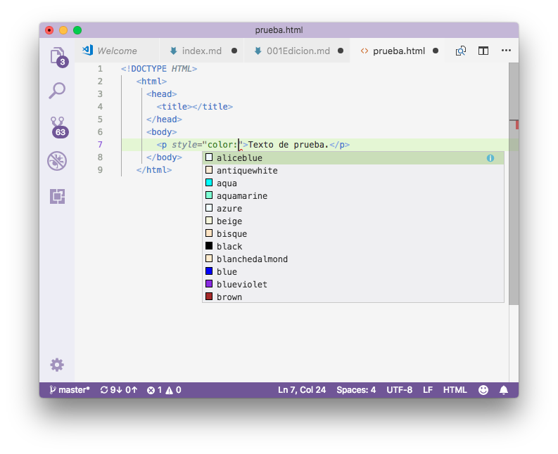
Si lo que estamos editando es un archivo markdown, tendremos la opción de dividir la pantalla en dos paneles. A la izquierda podemos editar el texto, y a la derecha se previsualizará con su aspecto web:
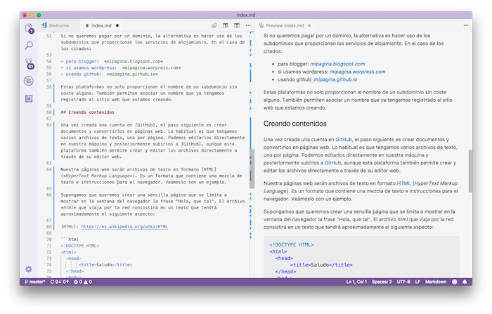
Para activar la previsualización, ejecutar el comando Open Preview to the Side, o pulsar en uno de los pequeños iconos de la esquina superior derecha, en la barra de pestañas. Pasando el ratón por encima de esos iconos, se muestra una explicación de la utilidad de cada uno de ellos.
Para profundizar en el manejo de Visual Studio Code, podemos acudir a su documentación en línea.
El explorador y el terminal
Pulsando en la opción de menú View > Explorer o en el primer icono de la barra lateral izquierda, podemos acceder al panel del explorador:
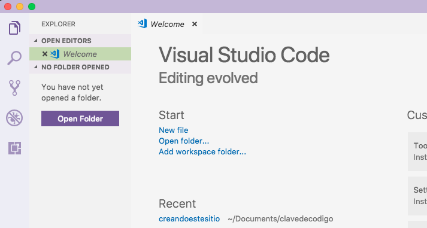
En este panel podemos ver la lista de documentos abiertos en la sección Open Editors. También podemos abrir una carpeta para examinar su contenido. Para ello, pulsar en el botón [Open Folder].
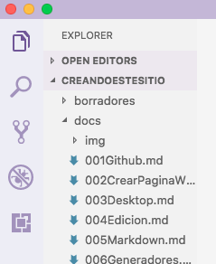
Aquí vemos como hemos abierto una carpeta y se muestra el contenido. Pulsando sobre una carpeta o archivo, se abre un panel inferior que emula el terminal de comandos del sistema operativo. Se abre con la carpeta seleccionada como directorio actual:
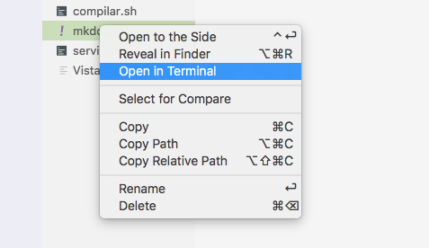
La emulación de terminal nos permite introducir los comandos propios del sistema operativo.

El panel del Terminal se cierra pulsando sobre el icono [x] de su esquina superior derecha.
La carpeta que hemos abierto en el explorador se puede cerrar mediante el menú File > Close Folder. Se cerrarán los archivos que estamos editando, preguntando previamente si queremos guardar los cambios.
Extensiones
Visual Studio Code permite la descarga e instalación de complementos para añadir más funcionalidades. Y para ello mantiene un repositorio de contribuciones de la comunidad de desarrolladores, con un proceso de instalación y desinstalación muy cómodo.
Vamos a instalar un verificador de ortografía. Lo primero es abrir el panel de complementos, pulando en el menú View > Extensions (o en el icono extensiones de la barra lateral). Se muestra un panel para ver lo que tenemos instalado, las recomendaciones de Microsoft, y explorar en el repositorio para buscar lo más interesante. En la caja superior del panel, introducimos un texto de búsqueda. En este caso, la palabra “spell”, puesto que buscamos alguna herramienta de ortografía:
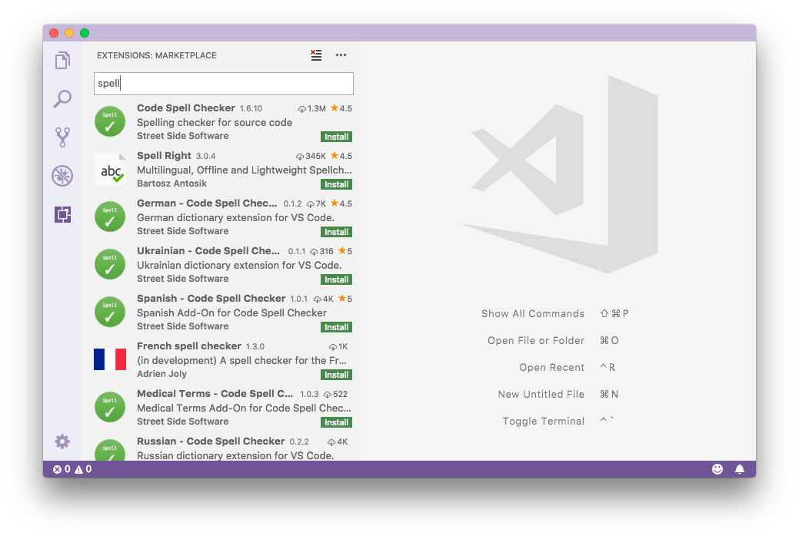
Los complementos disponibles se muestran en una lista ordenada por popularidad. Podemos cambiar el orden pulsando en el icono [...]
Pulsando sobre un complemento, se muestra un resumen del mismo, y un botón de [instalar]. En este caso, seleccionamos el módulo Code Spell Checker.
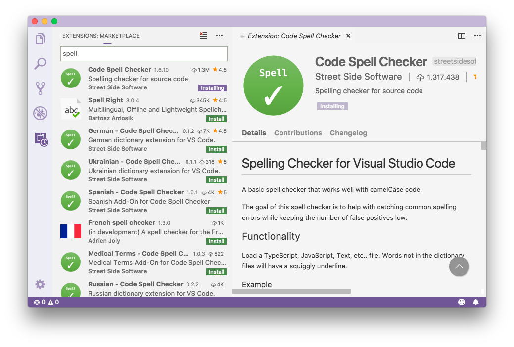
Instalamos también el diccionario de español:
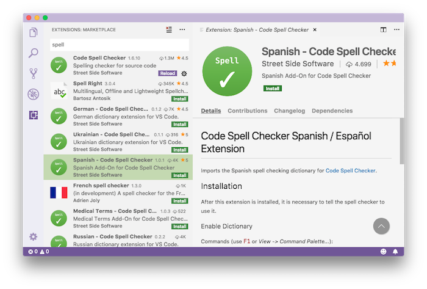
Tras reiniciar Visual Studio Code, las palabras no encontradas en el diccionario se muestran subrayadas. En la barra inferior de estado se muestra el estado del verificador de ortografía:
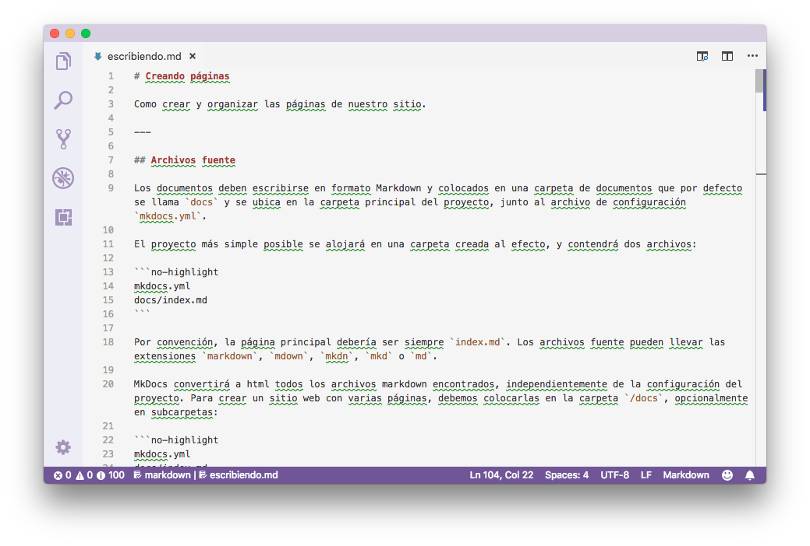
Pulsando sobre ese estado en la barra inferior, abrimos el configurador de la extensión. Seleccionamos el idioma:
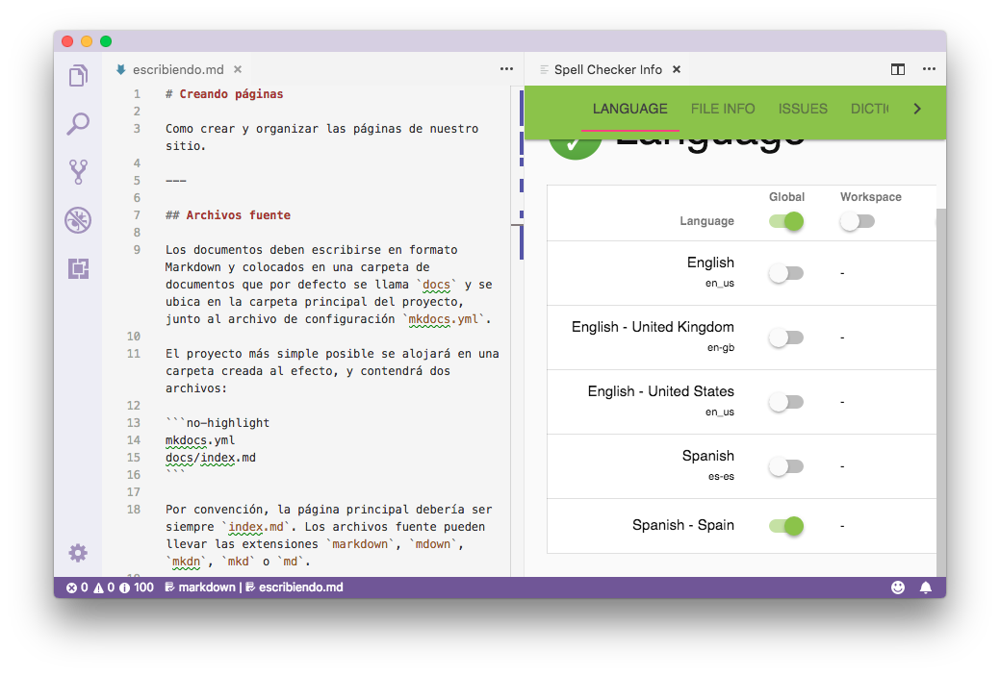